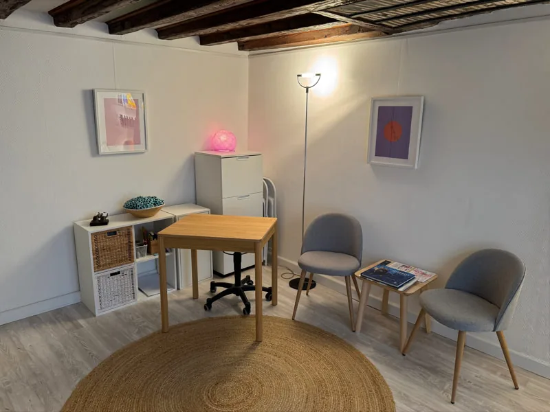
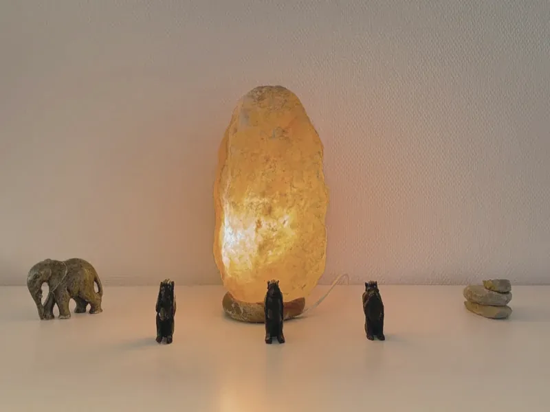

À propos
Beat Hächler.
Enseignant de formation, masseur par passion. Le jeudi à Nyon, le mercredi et le vendredi à Genève.
Parcours
Le toucher, une passion de toujours.
Si mon parcours professionnel s'est principalement déroulé dans l'enseignement et le développement personnel, le corps humain et le toucher m'ont toujours fasciné. C'est finalement à 50 ans que j'ai concrétisé cette passion, en l'intégrant pleinement à mon quotidien.
Très vite après ma formation de massothérapeute, je me suis intéressé aux tensions musculaires et au traitement des points gâchettes (trigger points). J'ai approfondi ce domaine à travers diverses formations et techniques : la pression ischémique, les ventouses, la vibration au diapason et, dernièrement, la Tecarthérapie.
En parallèle de ce travail ciblé, je propose des massages relaxants, pour un relâchement global et une détente profonde, ainsi que le drainage lymphatique.
L'enseignement
Une carrière d'enseignant, tournée vers le développement personnel.
À 50 ans, le massage
Formation en massage classique et en drainage lymphatique.
Les points gâchettes
Formations continues, dont les points gâchettes et le massage sportif. Pression ischémique, ventouses, vibration au diapason.
Dernièrement, la Tecarthérapie
Intégrée au massage anti-tensions.
Années à compléter par Beat
Formations
Ce que j'ai appris.
- Massage classique · membre FSMP
- Drainage lymphatique
- Points gâchettes (trigger points)
- Massage sportif
- Réflexologie
- Massage Lomi Lomi
- Tecarthérapie
FSMP : Fédération Suisse des Masseurs Professionnels.
Le lieu
Le cabinet, ruelle de la Poterne.
Glissez pour voir les photos.




Genève
Mains des Bains, aux Pâquis.
À côté de mon activité à Nyon, je fais partie de l'association Mains des Bains, qui réunit les masseuses et les masseurs des Bains des Pâquis à Genève. J'y masse le mercredi et le vendredi.
Selon le site des Bains, l'association propose des massages aux Bains des Pâquis depuis 1993 et réunit une quinzaine de masseurs indépendants.